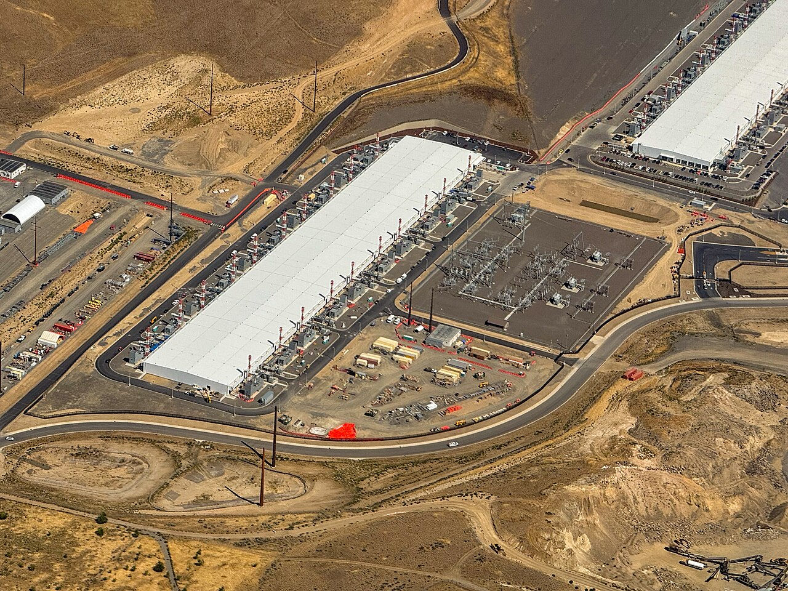

Microsoft revenue rose 19% to $92.3 billion as capital spending doubled to $39.4 billion


Every quarter, Microsoft's 10-Q says how much more it is spending to keep up with demand for AI, and this one set a new mark. In the three months to September, the first quarter of its fiscal 2027, it spent $39.4 billion on property and equipment, mostly data centers and the computers in them, more than twice the $19.4 billion of a year earlier. The money is still coming back as sales: revenue grew 18.8% to $92.3 billion and operating income 21.0% to $45.9 billion. What the spending squeezes is the cash left over.
Azure carried the quarter
Revenue grew 18.8% on the same quarter a year earlier, the fastest of the last eight quarters; in the quarter that ended in December 2024 it had grown 12.3%. The 10-Q says the $14.6 billion increase was "driven by growth in Agents and Infra," the segment Microsoft created in September for its business software, AI agents and Azure cloud. That segment's revenue was $76.8 billion, up 25%, and Azure alone grew 48%, which the company put down to "demand for services across the platform with continued growth across all workloads."
The rest of the company shrank. Devices and Consumer, which includes Windows, Xbox and search advertising, brought in $15.5 billion, down 3%. Windows OEM and devices revenue fell 22%, which the 10-Q puts down to extra demand a year earlier ahead of the end of Windows 10 support, inventory drawdowns by PC makers and their partners, and weaker PC demand. Chief financial officer Amy Hood pointed to the cloud instead: Microsoft Cloud revenue was $63.9 billion, "with growth accelerating to 30%," she said. Business customers have also signed up for much more to come: commercial remaining performance obligation, revenue under contract that Microsoft has yet to recognize, rose 73% to $677 billion, the earnings release says.
The bill for capacity
Capital spending of $39.4 billion was 4.0 times the $9.7 billion Microsoft spent in the quarter that ended in December 2023. Over the last four quarters it came to $135.9 billion. The 10-Q shows commitments well beyond that: at September 30, Microsoft had signed $364.6 billion of leases, primarily for data centers, that had not yet started. They begin between fiscal 2027 and fiscal 2034.
Running all that hardware costs money too. In Agents and Infra, the cost of revenue rose 35%, "driven by investments in datacenter infrastructure to support growing customer demand across Azure and Microsoft 365 cloud," and Microsoft Cloud's gross margin fell to 66% as more of its sales came from Azure. For the whole company, gross margin was 67.8%, against 69.0% a year earlier.
Microsoft made up for it lower down. Operating expenses rose only 6%, and the 10-Q says "Total company headcount decreased 2%." Research and development spending was $9.0 billion, up 11.1%. So operating margin rose to 49.8% from 48.9%: almost half of every dollar of revenue was left as operating profit.
A profit jump helped by OpenAI
Net income rose 32.0% to $36.6 billion, faster than operating income, and the reason is OpenAI. Microsoft holds an equity stake of about 24% in the company and records its share of OpenAI's results below operating income. This quarter that line included $272 million of net gains; a year earlier it included $4.1 billion of net losses. Leaving OpenAI out, as Microsoft does in its own adjusted figures, net income was $36.4 billion, up 18%.
Diluted earnings per share were $4.92, up 32.3%. The effective tax rate was 20.3%, against 19.1% a year earlier.
Less cash left over
Cash from operations grew 28.7% to $58.0 billion. Capital spending took 67.9% of it, against 43.0% a year earlier, so free cash flow fell 27.4% to $18.6 billion. As a share of revenue it was 20.2%, against 33.0%.
Microsoft still paid $6.8 billion in dividends and $4.4 billion for share buybacks, together 59.8% of free cash flow, and it repaid debt: total debt was $35.5 billion, against $43.2 billion a year earlier. The difference came out of its savings. Cash and short-term investments were $64.5 billion at September 30, against $102.0 billion a year earlier.
Not every software company has chosen this path. ServiceNow, which reported the same day, cut its capital spending and leans more on cloud capacity rented from other companies. Microsoft is building its own, and so far its sales are growing fast enough to lift profit anyway. The cost is showing up in its cash.
Twelve quarters of figures
Capital spending is additions to property and equipment from the cash flow statement; it does not include equipment and buildings obtained under finance leases. Free cash flow is cash from operations minus capital spending. Total debt is the balance sheet's long-term debt plus its current portion. Microsoft changed its segments in September 2026; segment figures here are as the company now reports them.
Sources: Form 10-Q (SEC EDGAR) · Form 10-Q filing index · EDGAR company facts for Microsoft · Microsoft first-quarter fiscal 2027 earnings release (Exhibit 99.1). More figures for Microsoft are on its company page.